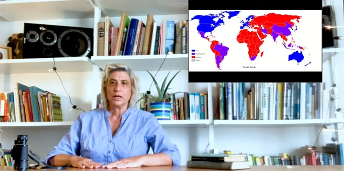

עם התמשכות תקופת הקורונה ואי-הוודאות המתלווה אליה, וככל שהמפגשים מתקיימים מרחוק, הולכת ומתחוורת ההבנה שכל ניסיון לפענח את מאפייני התקופה דורש מעט פרספקטיבה ועיבוד – ושכרגע אנו שרויים במעין ניסוי עולמי.
תחושת השיכרון שהציפה אותנו בשל העובדה שבקליק אחד "קפצנו" מקונצרט בניו יורק להפקת תאטרון בלונדון, יצרה גם בלבול בהבנה שלנו של "קרוב" ו"רחוק", והתחלפה בעייפות גדולה מההיצע וממיעוט הזמן הפנוי. למרות הצורך לתכנן מסלול מחדש, תובנה אחת הולכת ומתבהרת ככל שאנו שרויים עמוק יותר במסתורי התקופה: תקופת הקורונה היא כנראה תמצית בלבד של מגמה עולמית שכבשה כל פינה על הגלובוס, ובה תרבות בעלת היגיון מערבי, תופסת את קדמת הבמה בהיכלי התרבות וגם ברשתות המקומיות.
באופן פרדוקסלי נדמה שדווקא תקופת "קורונה-זום" – המבלבלת בין הרחוק לקרוב ושבה המיקום הגאוגרפי מאבד (לכאורה) משמעות – מזמנת לנו אפשרות לעסוק בחלופות מעניינות לתפיסה ההגמונית ובשאלה כיצד אפשר לצקת משמעות למושג המקומיות.

ימי הלימוד הראשונים של התקופה היו אפוא מעין בירור מואץ של שאלה בסיסית שמלווה יוצרים בכל העולם: כיצד הדחף לפעול במרחב הסובב אותנו ולייצר תכנים מידיים ביחס למשבר עולמי פוגש את הצורך בכיול מחודש וניסוח השיח על תרבות בעתות משבר.
את שני ימי הלימוד הראשונים בתקופה זו הובילה הדס קידר, חברת סגל חדשה במרכז מנדל למנהיגות בנגב ומי שמובילה את התוכנית יחד עם ד"ר יצחק (קיקי) אהרונוביץ' ופרופ' דנה אריאלי. הרצאתו של אהרונוביץ' בנושא תכנון, מיפוי ומרחב העלתה שאלות בנוגע לפעולה תרבותית המתייחסת למדיניות התכנון בישראל.
במפגש מקוון של הקבוצה בנושא התרבות המקומית ומידת התייחסותן של יצירות אל סביבתן, הציגה קידר שלוש דוגמאות לפרויקטים אקולוגיים מהאמנות המקומית אשר מביעים עמדה נחרצת בכל הקשור לקיימות ולשמירה על הטבע: "שיקום מחצבת נשר" (1971) ו-"בוסטן כיאט" (1977) של יצחק דנציגר – יצירות אמנות בטבע שמתייחסות להיסטוריה של המקום, ו"פרויקט החממה" של אביטל גבע – חממה אקולוגית הבנויה על היגיון של "מעגל סגור" של הטבע שהוקמה בקיבוץ עין שמר (וייצגה את ישראל בביאנאלה בוונציה בשנת 1993). העמיתים דנו בהקשרים הסביבתיים שהפרויקטים של גבע ושל דנציגר מציפים באמצעים אסתטיים מקומיים.

כמו כן עסקו העמיתים במפגש זה בבחינה מקרוב של "פרויקט ואדי עתיר" (על כביש 31, דרום-מזרחית ליישוב חורה) כהדגמה לפרויקט אקולוגי עכשווי בנגב. הפרויקט, שהוקם על-ידי ראש עיריית חורה, ד"ר מוחמד אלנבארי ואדריכל ישראלי לשעבר, ד"ר מיכאל בן אלי, עוסק באיסוף, שימור, שחזור והוראה של תרבות מסורתית וטכנולוגיות עתיקות של עיבוד אדמה.
בהמשך המפגש פגשו העמיתים את ד"ר עפרי אילני ושוחחו עמו על מאמרו "תפקיד האינטלקטואל בעידן ההכחדה" שקראו כהכנה למפגש. העמיתים דנו יחד עם ד"ר אילני בשאלת תפקידו של היוצר והאינטלקטואל לנוכח הסכנה האקולוגית (המורגשת באופן קיצוני באזורי המדבר), וכן שוחחו על הקשר שבין משבר הקורונה הנוכחי לבין משבר האקלים. ד"ר אילני העלה את השאלה מדוע למשבר האקלים קשה לרתום את דעת הקהל ולגרום לשינוי באורח החיים (להמעיט בנסיעות ובטיסות ולצמצם את הצריכה) כפי שמשפיע עלינו משבר הקורונה? הדיון הסתיים בתקווה שהמשבר הנוכחי ילמד את האנושות שאפשר לנהוג בצורה זהירה גם כדי לשמור על האיזון בין הטבע לאדם.
תקופה זו הבהירה לנו שכיזמי תרבות בנגב, עלינו להמשיך לפעול ולייצר חלופות ראויות לתרבות הגלובלית, ושחלופות אלו נמצאות כנראה במאפיינים הספציפיים של ה"מקומי-מקורי" בנגב: באוכלוסייה בעלת ההיסטוריה המגוונת; בעמיתים שיוצרים לצדנו; באדמה שעליה אנו דורכים ובמבט המפוכח על המאזן האקולוגי והסביבה הטבעית הסובבת אותנו, הנמצאת במשבר וזקוקה (גם) לנו כדי להמשיג אותה באמצעים אסתטיים.
הדס קידר, חברת סגל בתוכנית מנדל למנהיגות תרבות בנגב, מספקת בסרטון הקצר הצצה לתכנים אלו הנלמדים בתוכנית. יוגב וענונו, עמית בתוכנית, מספר על עמותת קהילת היוצרים "הומא" שהיה שותף להקמתה, כאלטרנטיבה תרבותית בבאר שבע.
{kind=link}